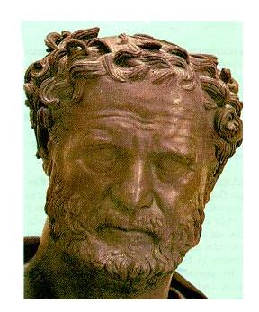

Δημόκριτος

Ο Δημόκριτος προσπάθησε να συγκεράσει τις θεωρίες του Ηράκλειτου και του Παρμενίδη στα πλαίσια μιας θεωρίας που την ονόμασε "ατομική θεωρία".
Όλοι ξέρουμε ότι κάθε υλικό αντικείμενο μπορεί να κοπεί σε μικρότερα τμήματα, που, με τη σειρά τους, το καθένα είναι δυνατό να τμηθεί σε μικρότερα κομμάτια. Η διαδικασία αυτή όμως της τμήσης ενός υλικού αντικειμένου, κατά τον Δημόκριτο, έχει ένα όριο. Κομματιάζοντας δηλαδή ένα υλικό αντικείμενο θα καταλήξουμε κάποτε σε ορισμένα σωματίδια, που δεν μπορούν να τμηθούν σε μικρότερα. Γι' αυτό και τα μικρά αυτά σωματίδια ο Δημόκριτος τα αποκάλεσε άτομα (από το "α" στερητικό και το ρήμα "τέμνω").
Κατά τον Δημόκριτο, τα άτομα από τα οποία συγκροτείται κάθε υλικό σώμα, χάρη στο κενό που υπάρχει ανάμεσα τους, βρίσκεται σε διαρκή κίνηση, που έχει τη μορφή δίνης. Αλλάζοντας θέση τα άτομα μέσα στο κενό διάστημα, συγκρούονται μεταξύ τους και σχηματίζουν, μέσα από τις συνεχείς, αλλεπάλληλες συγκρούσεις τους, καινούριους συνδυασμούς και νέες μορφές σωμάτων.
Ο Δημόκριτος υποστήριξε ότι τα άτομα ως μη δυνάμενα να τμηθούν περαιτέρω, παραμένουν αναλοίωτες οντότητες ικανοποιώντας, κατ' αυτό τον τρόπο, το αίτημα του Παρμενίδη για την ύπαρξη σταθερότητας. Από την άλλη όμως πλευρά ο Δημόκριτος, όταν μιλάει για τους ποικίλους συνδυασμούς των ατόμων που δημιουργούνται μέσα από τη διαρκή και ακατάπαυστη κίνησή τους, υιοθετεί τον ισχυρισμό του Ηράκλειτου για την αέναη μεταβολή στον κόσμο.